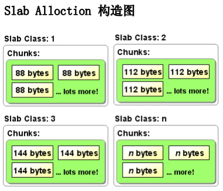
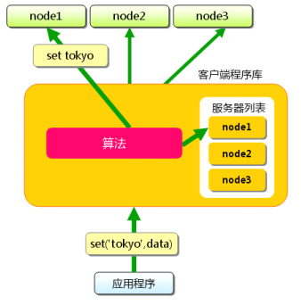
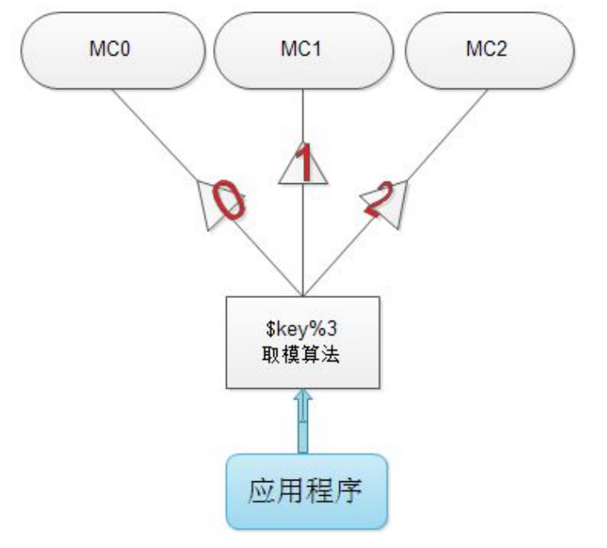
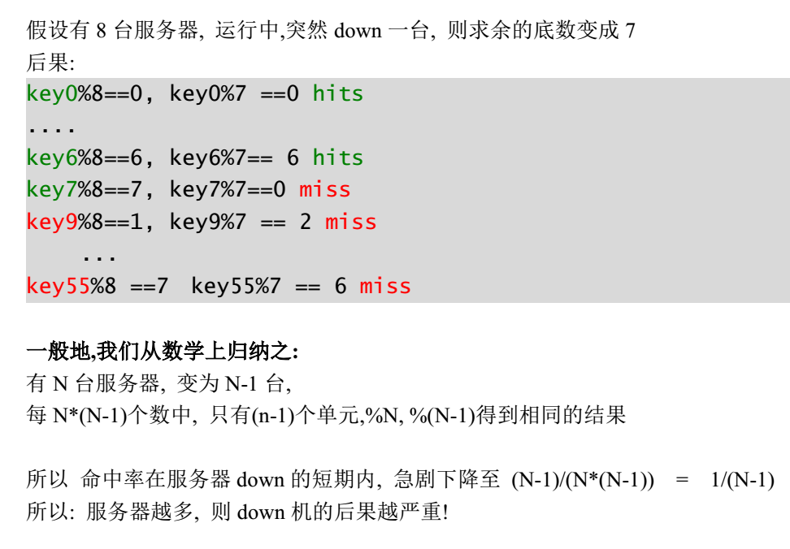
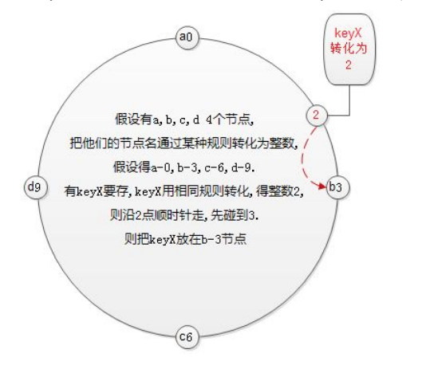
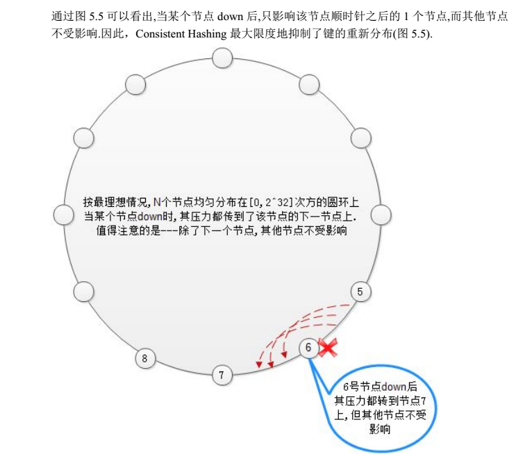
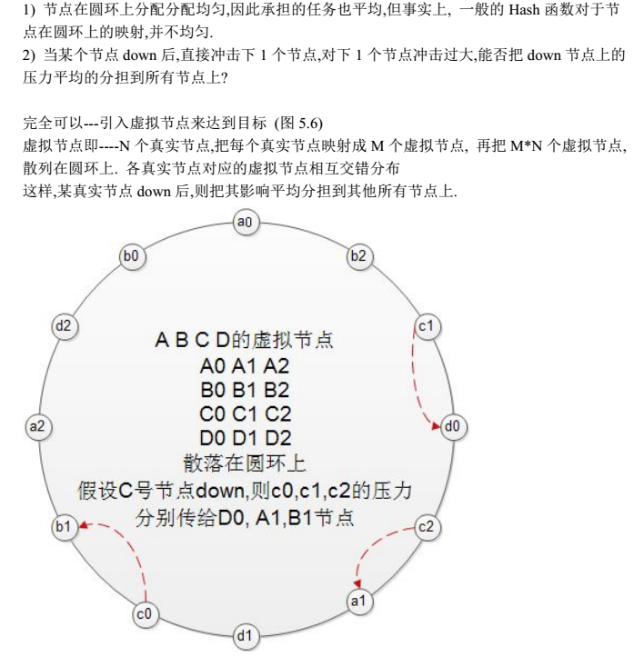
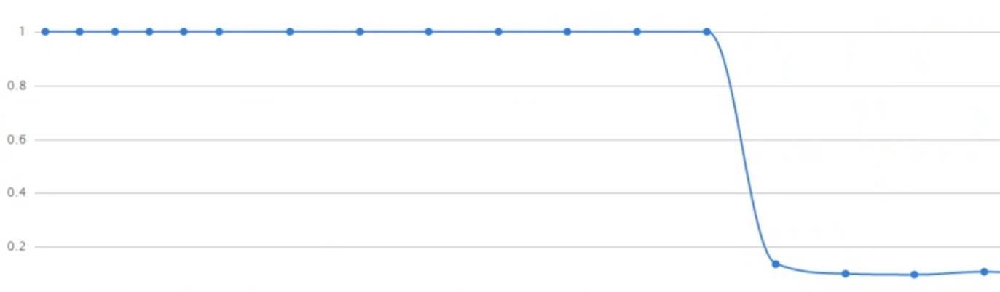
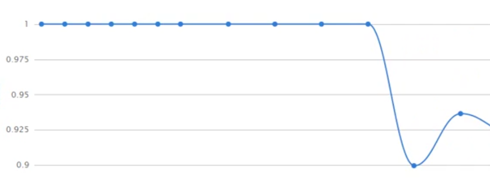

memcached学习笔记
完整的memcached基础知识以及必须知道的问题，了解一下
什么是memcached？
memcached is a high-performance, distributed memory object caching system, generic in nature, but originally intended for use in
speeding up dynamic web applications by alleviating database load.
memcached是一个高性能,分布式内存对象缓存系统,具备通用性,但本来的目的是用于为动态web程序加速,并减轻数据库的的负担
安装
- windows安装
在windows下安装,相对简单,
Memcached官网：http://memcached.org
从官方网站下载相应的二进制文件,
解压到磁盘即可
- linux安装
libevent官网：http://libevent.org/
Memcached官网：http://memcached.org
• 安装 libevent(memcached依赖libevent)1
2
3
4
5# tar zxvf libevent-2.0.1-stable.tar.gz
# cd libevent-2.0.21-stable
# ./configure --prefix=/usr
# make
# make install
• 安装 Memcached
1 | # tar zxvf memcached-1.4.15.tar.gz |
重要启动项
- -p
监听的TCP端口 (缺省: 11211) - -d 以守护进程方式运行Memcached
- -u
运行Memcached的账户，非root用户 - -m
最大的内存使用, 单位是MB，缺省是 64 MB - -c
软连接数量, 缺省是 1024 - -v 输出警告和错误信息
- -vv 打印客户端的请求和返回信息
- -h 打印帮助信息
- -i 打印memcached和libevent的版权信息
1 | $安装路径\memcached.exe -m 32 --vv -p 11211 |
连接
1 | telnet localhost 11211 |
基础操作
增
1 | add key flag expiretime bytes\r\n |
- key 给值起一个独特的名字
- flag 标志，1是字符串，2反转数组，3，反序列化对象
- expire 有效期（可以设置秒数，时间戳，设置为0，不自动失效，默认为30天）
- length 缓存的长度（字节为单位）
删
1 | delete key |
查
1 | get key |
改
1 | replace key flag expiretime bytes\r\n |
已存在的可以用replace进行替换，更改
1 | set key flag expiretime bytes\r\n |
键不存在则新增，键存在则修改
清空
1 | flush_all |
incr,decr命令：增加/减少值的大小
1 | incr/decr key num |
统计信息
把当前的运行信息统计出来
1 | stats |
memcached内存分配机制
内存的碎片化
在向操作系统申请和释放内存时，形成了一些很小的内存片，这些内存片段无法再利用的现象称为内训的碎片化
memcached的Slab Allocator分配机制
Slab Allocator的基本原理
Slab Allocator的基本原理是按照预先规定的大小，将分配的内存分割成特定长度的块，以完全解决内存碎片问题。Slab Allocation的原理相当简单。 将分配的内存分割成各种尺寸的块（chunk），并把尺寸相同的块分成组（chunk的集合）

Page为内存分配的最小单位
Memcached的内存分配以page为单位，默认情况下一个page是1M，可以通过-I参数在启动时指定。如果需要申请内存时，memcached会划分出一个新的page并分配给需要的slab区域。page一旦被分配在重启前不会被回收或者重新分配
Slabs划分数据空间
Memcached并不是将所有大小的数据都放在一起的，而是预先将数据空间划分为一系列slabs，默认是1m，每个slab只负责一定范围内的数据存储。如下图，每个slab只存储大于其上一个slab的size并小于或者等于自己最大size的数据。例如：slab 3只存储大小介于137 到 224 bytes的数据。如果一个数据大小为230byte将被分配到slab 4中。从下图可以看出，每个slab负责的空间其实是不等的，memcached默认情况下下一个slab的最大值为前一个的1.25倍，这个可以通过修改-f参数来修改增长比例。
Chunk才是存放缓存数据的单位
Chunk是一系列固定的内存空间，这个大小就是管理它的slab的最大存放大小。例如：slab 1的所有chunk都是104byte，而slab 4的所有chunk都是280byte。chunk是memcached实际存放缓存数据的地方，因为chunk的大小固定为slab能够存放的最大值，所以所有分配给当前slab的数据都可以被chunk存下。如果时间的数据大小小于chunk的大小，空余的空间将会被闲置，这个是为了防止内存碎片而设计的。例如下图，chunk size是224byte，而存储的数据只有200byte，剩下的24byte将被闲置。
Slab的内存分配
Memcached在启动时通过-m指定最大使用内存，但是这个不会一启动就占用，是随着需要逐步分配给各slab的。如果一个新的缓存数据要被存放，memcached首先选择一个合适的slab，然后查看该slab是否还有空闲的chunk，如果有则直接存放进去；如果没有则要进行申请。slab申请内存时以page为单位，所以在放入第一个数据，无论大小为多少，都会有1M大小的page被分配给该slab。申请到page后，slab会将这个page的内存按chunk的大小进行切分，这样就变成了一个chunk的数组，在从这个chunk数组中选择一个用于存储数据。如下图，slab 1和slab 2都分配了一个page，并按各自的大小切分成chunk数组
Memcached内存分配策略
memcached的内存分配策略就是：按slab需求分配page，各slab按需使用chunk存储。
这里有几个特点要注意，
- Memcached分配出去的page不会被回收或者重新分配
- Memcached申请的内存不会被释放
- slab空闲的chunk不会借给任何其他slab使用
Memcached在启动时通过-m参数指定最大使用内存，但是这个不会一启动就占用完，而是逐步分配给各slab的。如果一个新的数据要被存放，首先选择一个合适的slab，然后查看该slab是否还有空闲的chunk，如果有则直接存放进去；如果没有则要进行申请，slab申请内存时以page为单位，无论大小为多少，都会有1M大小的page被分配给该slab（该page不会被回收或者重新分配，永远都属于该slab）。申请到page后，slab会将这个page的内存按chunk的大小进行切分，这样就变成了一个chunk的数组，再从这个chunk数组中选择一个用于存储数据。若没有空闲的page的时候，则会对改slab进行LRU，而不是对整个memcache进行LRU
- n（最小分配空间）：即初始chunk的大小，默认是48，此时初始chunk的大小是96，（注意并不是2倍的关系，当设置为50时，第一个chunk的大小是104），-n越大slab越少。
- slab的数量最大是200(当指定-f 1.0001)时，增长因子越大，slab越少，-f 不能小于1。
固定大小chunk带来的内存浪费
将100字节的数据缓存到122字节的chunk中剩余的22字节就浪费了
知道了这些以后，就可以理解为什么总内存没有被全部占用的情况下，memcached却出现了丢失缓存数据的问题了
memcached的过期机制和删除机制
惰性删除
- 当某个值过期后，并没有从内存删除，因为，stats统计时，curr_item有其信息
- 当某个新值去占用他的位置时，当成空chunk来占用
- 当get值时，判断是否过期，如果过期，返回空，并且清空，curr_item就减少了
这个过期，对于用户来说，访问不到，但并没有在过期的瞬间立即从内存删除
LRU删除机制
若果以122byte大小的chunk举例，122的chunk都满了，又有新的长度为120的值要加入，要挤掉谁？
memcached用的是最近最少使用算法来挤掉被占用的chunk
原理：当某个单元被请求时，维护一个计数器，通过计数器来判断最近谁最少被使用，就把谁踢出。
memcached分布式
memcached虽然称为“分布式”缓存服务器，但服务器端并没有“分布式”功能。Memcache集群主机不能够相互通信传输数据，它的“分布式”是基于客户端的程序逻辑算法进一步实现的

分布式算法之取模算法
最容易想到的算法是取模算法，即N个节点要从0->N-1编号
key对N取模，余i,则key落在第i台服务器上

代码实现取模算法
1 | <?php |
取模算法的缺陷

分布式算法之致性哈希算法
一致性hash算法除了计算key的hash值外，还会计算每个server对应的hash值，然后将这些hash值映射到一个有限的值域上（比如0~2^32）。通过寻找hash值大于hash(key)的最小server作为存储该key数据的目标server。如果找不到，则直接把具有最小hash值的server作为目标server。
为了方便理解，可以把这个有限值域理解成一个环，值顺时针递增。

某节点down后的变化情况,对其他节点的影响

一致性哈希算法的改进–增加虚拟结点

代码实现一般一致性哈希算法
1 |
|
代码实现支持虚拟节点的一致性哈希算法
1 |
|
取模以及一致性哈希命中率对比
准备
开启五个memcached进程
以windows为例：cmd下多开窗口1
2
3
4
5memcached.exe -m 4 -p 11211 -vvv
memcached.exe -m 4 -p 11212 -vvv
memcached.exe -m 4 -p 11213 -vvv
memcached.exe -m 4 -p 11214 -vvv
memcached.exe -m 4 -p 11215 -vvv
以下是源码文件：
- calStats.php 统计命中率
- config.php 结点配置
- delNodeReqquest.php ，模拟down一个服务器结点获取数据的过程
- Distribute.php 取模和一致性哈希算法的实现
- index.html 图表页面
- InitData.php 根据所配置的算法初始化memmcached数据
操作
初始化数据
1 | php InitData.php |
初始化数据后
开启服务，访问index.html
在源码目录下使用php内置web服务1
php -S localhost:8000
浏览器页面访问localhost:8000
就可以看到图表曲线在跳动
模拟down一个结点，访问数据
效果
取模算法

一致性哈希效率

总结
源码
calStats.php1
2
3
4
5
6
7
8
9
10
11
12
13
14
15
16
17
18
19
20
21
22
23
24
25
26
27
28
29
30
31
32
33<?php
/**
* Created by PhpStorm.
* User: seven
* Date: 2018/9/8
* Time: 14:32
*/
/**
* 统计各节点的平均命中率
*/
require ('./config.php');
$mem = new memcache();
$_gets =0;
$_hits =0;
foreach ($_mem as $k=>$v){
$mem->connect($v['host'],$v['port'],2);
$stats = $mem->getStats();
$_gets += $stats['cmd_get'];
$_hits += $stats['get_hits'];
}
$rate =1;
if($_gets>0){
$rate = $_hits/$_gets;
}
echo $rate;
config.php1
2
3
4
5
6
7
8
9
10
11
12
13
14
15
16
17
18
19<?php
/**
* Created by PhpStorm.
* User: seven
* Date: 2018/9/8
* Time: 13:46
*/
//配置文件，配置memcahced的结点信息
$_mem = [];
$_mem['A'] = ['host'=>'127.0.0.1','port'=>'11211'];
$_mem['B'] = ['host'=>'127.0.0.1','port'=>'11212'];
$_mem['C'] = ['host'=>'127.0.0.1','port'=>'11213'];
$_mem['D'] = ['host'=>'127.0.0.1','port'=>'11214'];
$_mem['E'] = ['host'=>'127.0.0.1','port'=>'11215'];
//分配策略
$_dis = 'Consistent';//Consistent;
delNodeReqquest.php1
2
3
4
5
6
7
8
9
10
11
12
13
14
15
16
17
18
19
20
21
22
23
24
25
26
27
28
29
30
31
32
33
34
35
36
37
38<?php
/**
* Created by PhpStorm.
* User: seven
* Date: 2018/9/8
* Time: 14:44
*/
/**
* 模拟减少结点的请求
*/
require ('./config.php');
require ('./Distribute.php');
$mem = new memcache();//实例化memcache操作类
$dis = new $_dis(); //实例化分布式算法类
//循环的添加服务器
foreach($_mem as $k=>$v){
$dis->addNode($k);
}
//模拟减少一台服务器
$dis->delNode('D');
//循环的命中memcached
for ($i=1;$i<10000;$i++){
$i = sprintf('%04d',$i%1000);
$keyNode = $dis->lookup('key'.$i); //根据key计算key所属的的节点
$mem->connect($_mem[$keyNode]['host'],$_mem[$keyNode]['port'],2);
if (!$mem->get('key'.$i)){
$mem->add('key'.$i,'value'.$i,0,0); //没命中，则添加入memcache
}
$mem->close();
usleep(3000);//睡眠一段时间
}
Distribute.php1
2
3
4
5
6
7
8
9
10
11
12
13
14
15
16
17
18
19
20
21
22
23
24
25
26
27
28
29
30
31
32
33
34
35
36
37
38
39
40
41
42
43
44
45
46
47
48
49
50
51
52
53
54
55
56
57
58
59
60
61
62
63
64
65
66
67
68
69
70
71
72
73
74
75
76
77
78
79
80
81
82
83
84
85
86
87
88
89
90
91
92
93
94
95
96
97
98
99
100
101
102
103
104
105
106
107
108
109
110
111
112
113
114
115
116
117
118
119
120
121
122
123
124
125<?php
/**
* Created by PhpStorm.
* User: seven
* Date: 2018/9/8
* Time: 13:49
*/
interface hash{
public function _hash($str);
}
interface distribution{
public function lookup($key);
}
class ModClass implements hash,distribution{
protected $_nodes=[];//节点数组
protected $_count=0;//结点的个数
public function _hash($str)
{
return sprintf("%u",crc32($str));//把字符串转成32位符号整数
}
public function lookup($key){
$location = $this->_hash($key)%$this->_count;
return $this->_nodes[$location];
}
public function addNode($node){
if(in_array($node,$this->_nodes)){
return true;
}
$this->_nodes[] =$node;
$this->_count+=1;
return true;
}
public function delNode($node){
if(!in_array($node,$this->_nodes)){
return true;
}
$key = array_search($node,$this->_nodes);
unset($this->_nodes[$key]);
$this->_nodes =array_merge($this->_nodes);
$this->_count-=1;
return true;
}
}
class Consistent implements hash,distribution {
protected $_position=[];
protected $_nodes=[];
protected $_mul =64;//每个节点对应64个虚节点
//对key进行转换
public function _hash($str)
{
return sprintf("%u",crc32($str));//把字符串转成32位符号整数
}
//计算key所操作的node服务器
public function lookup($key){
$point = $this->_hash($key);
$node = current($this->_position);//先取圆环上最小的一个结点，当成结果
foreach ($this->_position as $k=>$v){
if ($point<=$k){
$node=$v;
break;
}
}
reset($this->_position);
return $node;
}
//增加服务器
public function addNode($node){
if (isset($this->_nodes[$node])){
return;
}
for($i=0;$i<$this->_mul;$i++){
$pos = $this->_hash($node.'-'.$i);
$this->_position[$pos]=$node;
$this->_nodes[$node][]=$pos;
}
$this->_sortPos();
}
//对node进行排序，很重要的操作
public function _sortPos(){
ksort($this->_position,SORT_REGULAR);
}
public function delNode($node){
if (!isset($this->_nodes[$node])){
return;
}
foreach ($this->_nodes[$node] as $k){
unset($this->_position[$k]);
}
unset($this->_nodes[$node]);
}
public function getNodes(){
print_r($this->_position);
}
}
index.html
1 |
|
InitData.php1
2
3
4
5
6
7
8
9
10
11
12
13
14
15
16
17
18
19
20
21
22
23
24
25
26
27
28
29
30
31
32
33
34<?php
/**
* Created by PhpStorm.
* User: seven
* Date: 2018/9/8
* Time: 14:13
*/
//开启memcached各个端口的服务端
//memcached.exe -m 4 -p 1121* -vvv *为端口号1-5
require('./config.php');
require ('./Distribute.php');
$mem = new memcache();
$dis = new $_dis();//分布式算法
//循环的添加服务器
foreach($_mem as $k=>$v){
$dis->addNode($k);
}
//初始化数据
for($i=0;$i<1000;$i++){
$i = sprintf('%04d',$i);
$key = 'key'.$i;
$value = 'value'.$i;
$keyNode = $dis->lookup($key);
$mem->pconnect($_mem[$keyNode]['host'],$_mem[$keyNode]['port'],2);
$mem->add('key'.$i,'value'.$i,0,0);
usleep(3000);
}
echo "conplete";
缓存雪崩现象
该现象的产生是由某个缓存结点失效，导致其他结点的缓存命中率下降，缓存中缺失的数据去数据库查询，短时间内，造成数据库服务器崩溃
重启DB,短期又被压垮，缓存数据逐渐增加，DB反复多次启动多次之后，缓存才重建完毕，DB才稳定运行
或者是由于缓存周期性的失效，比如每6小时失效一次，每6小时将会有一个请求峰值，严重可能会令DB崩溃
缓存雪崩解决方案
由于失效周期导致的雪崩的解决方案
- 可以选择访问量小的时间段失效和更新缓存
- 设置随机3-9小时的生命周期，不同时失效，把工作分担到各个时间点上去
缓存的无底洞现象
Facebook的工作人员反应2010年已达到3000个memcached节点，储存数千G的缓存。
他们发现一个问题–memcached的连接效率下降了，于是添加，memcached节点，添加完之后，并没有好转。
称为“无底洞”现象
原因
以会员信息为例：
‘User-133-age’ 22
‘user-133-height’ 170
‘user-89-age’ 60
‘user-89-height’ 182
当服务器增多，若采取一致哈希算法来做分布式，密度变大，133号用户的信息也被散落在更多的服务器，所以，同样是访问个人主页，得到的相同的个人信息，节点越多，要连接的节点也越多，对于memcached的连接数，并没有随着节点的增多而降低，问题出现。
解决方案
把某一组key，按其共同前缀来分布：
在用分布式算法求其节点时，应该以’user-133’来计算，而不是以user-133-age/name/height来计算，这样3个关于个人信息的key，都落在同一个节点，访问个人主页时，只需连接一个节点。
永久数据被踢现象
数据设置为永久有效，却莫名其妙的丢失了
原因
由惰性删除和LRU删除算法引起的
可以简单理解为以下这样的过程：
- 数据在内存中失效后，并不会立马被删除，只有在下次get时候，系统才会将其删除。
- Memcache可以因此，被一些未被及时删除的数据占满空间。
- 加之LRU淘汰机制，永久数据如果很少被访问的话，在内存空间被占满的情况下，再有新数据被缓存，则永久数据，就有可能被删除。
官方解决方法：
永久数据和非永久数据分开放